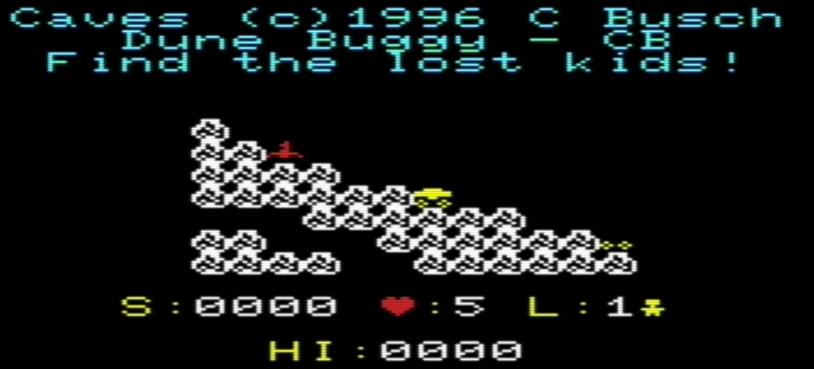
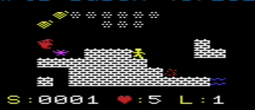
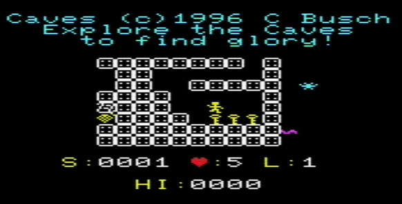
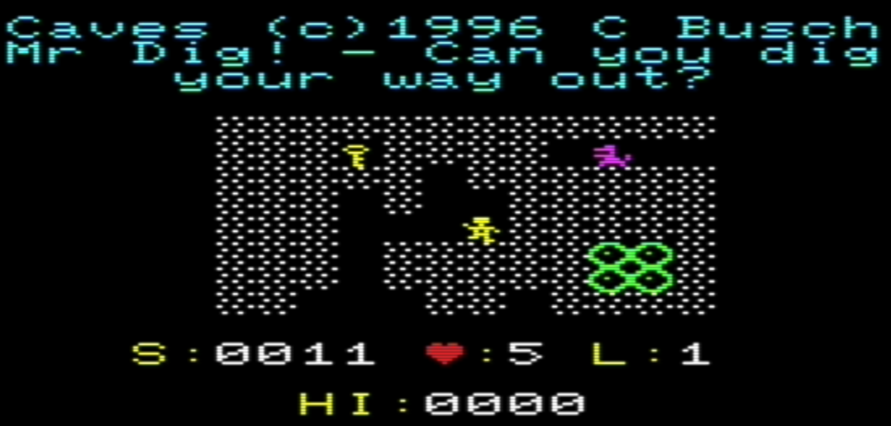

Commodore Vic-20 versions of Caves for the TI-85 by Chris Busch (c) 1996
Caves was written for the TI-85 calculator by me 30 years ago! This port is an color and sound enhanced version.
These .prg files are for the VIC-20 with 32K: one LVL pack (story, maps, and
pictures) compiled with the Caves engine. Pick a pack in the list
below. In VICE use xvic -memory all. Works on a real Vic-20 too!
Because there can be many LVL packs, the story can change from one file to the next. The best-known story is this:
You need to retrieve the artifact of wisdom from a deep secret world. At your disposal is a pellet gun and strong jumping legs.
Beware: monsters will hurt you if they find you. If they do not get you, the fire will burn you.
When you retrieve the artifact (the scroll), you travel to another land and the quest continues.




Keys and joystick may be used together. Fire is Shift and jump is C= so you can hold them and still walk (the VIC only reports one letter key at a time). Bottom row: Joy or Shift C= M,. Press fire or any key at the title to start; hold time seeds the random numbers.
| Key / stick | Action |
|---|---|
| C= / joy up | jump if grounded |
| M / joy left | walk left |
| . / joy right | walk right |
| , / joy down | fall faster, or bounce high on a cloud |
| Shift / fire | shoot (facing stays; you do not walk while firing) |
| Q | quit this run./td> |
| P | pause; press P again to continue |
After a scroll the next level begins.